A gas meter that reads itself.
کنتوری که خودش را میخواندAn ESP32-S3 counts the meter's reed pulses, freezes its own reading at every Jalali billing period, and sends it home over cellular, or by SMS when the network fails. A fleet console turns the readings into forecasts, alerts and invoices anyone can verify.
One pulse, from drum to invoice
Every step below is built and tested in the repository. The numbers come from the code and the published analytics.
- 1
Pulse
A magnet on the last red drum closes a reed contact once per turn.
1 pulse = 0.01 m³ - 2
Count
Debounced in firmware, saved to flash on every pulse in two CRC-checked slots.
130 host checks - 3
Self-read
At 00:00 Tehran on the first day of each Jalali season the meter freezes its reading.
period_close record - 4
Deliver
Store-and-forward over LTE; an unsent billing reading also goes out as one SMS.
contract v2 · batch API - 5
Analyse
Degree-day models, next-month forecasts and six fault detectors, scored on a held-out fleet.
WAPE 9.5 % - 6
Bill
Stepped tariff per Jalali period, bilingual PDF and a signed QR token.
illustrative prices
Look inside
Working pages, not mock-ups. All data is synthetic: 240 simulated meters in six Iranian cities.
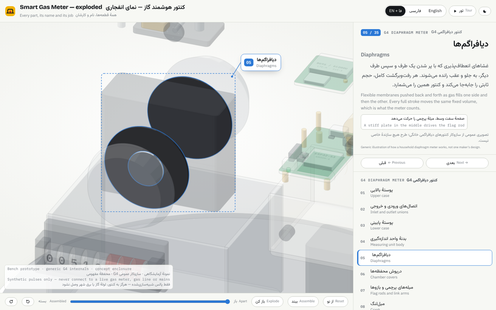
Every part, exploded
Turn the meter and the device, take them apart, and click any of 119 parts for its name and job in Persian and English.
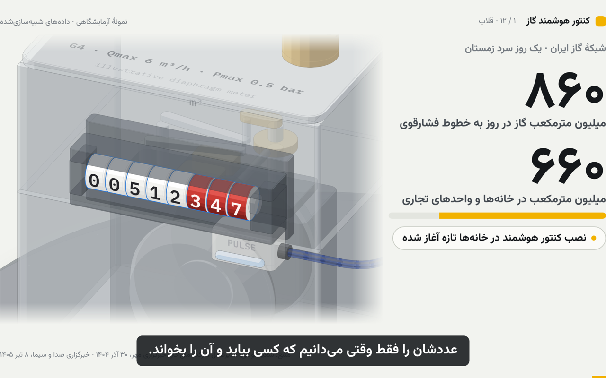
Persian explainer
A five-minute video for a conference: how a diaphragm meter counts, how the device reads itself, and what it could mean for the gas company.
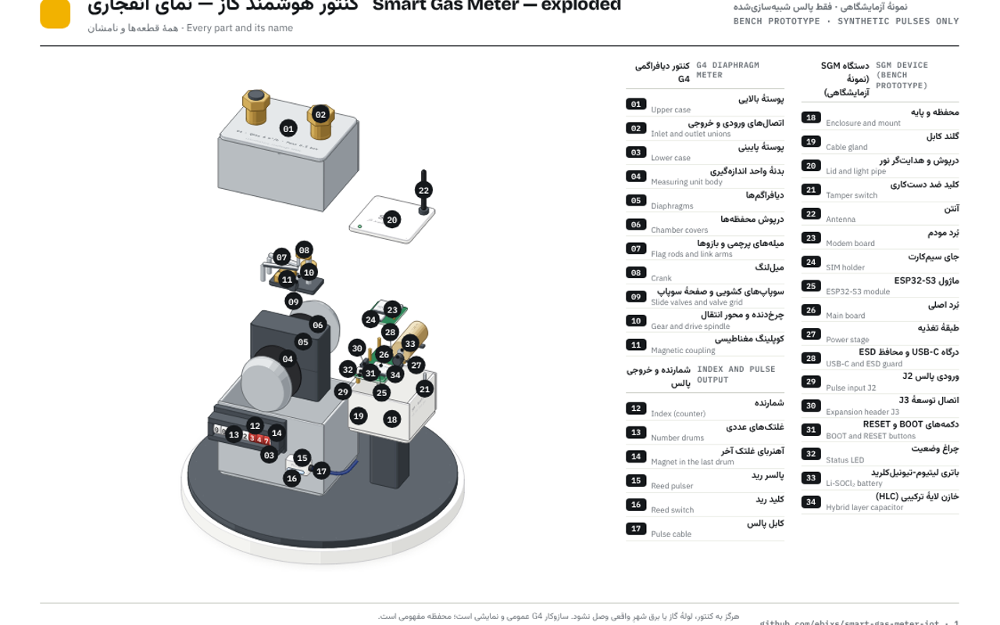
Printable sheets
Eight A4 pages: the pinned exploded view, how it works, and every part in Persian and English.
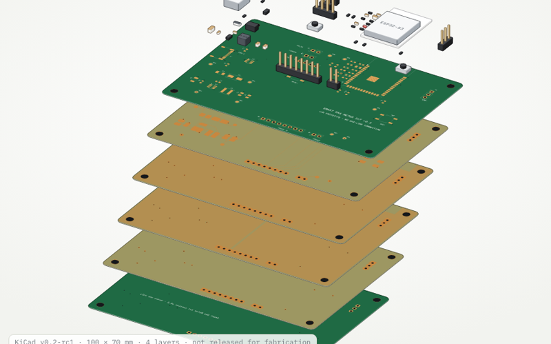
Carrier board, layer by layer
The real KiCad board with every copper layer, mask and part separated; click any part or layer for its job in Persian and English.
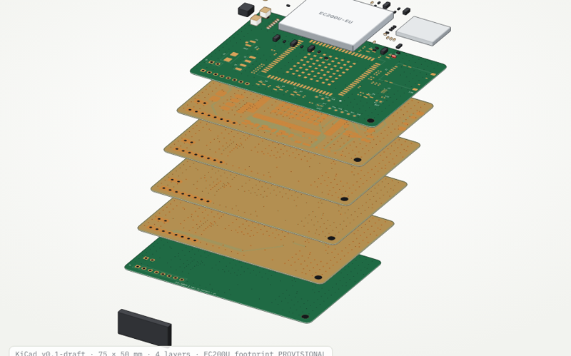
Modem board
New EC200U-EU daughterboard designed in KiCad: VBAT plane, level shifting, protected SIM, 50 Ω antenna line. Footprint provisional.
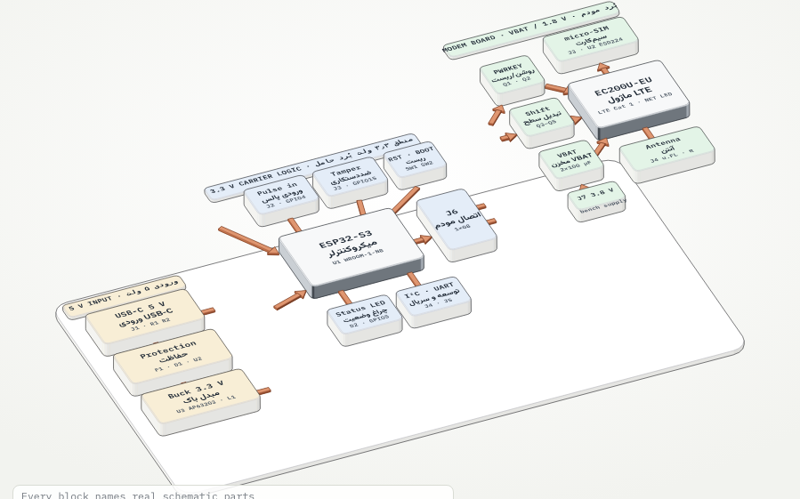
Block diagram in 3D
The whole electronics as one block diagram that splits into its 5 V, 3.3 V and modem domains.
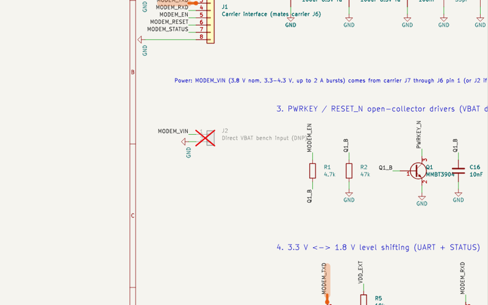
Schematic explorer
Both real schematics: click a wire to trace its net across the sheet and from one board to the other.
Boards tour
A silent guided video tour of the carrier board, the modem board and the block diagram, with bilingual captions.
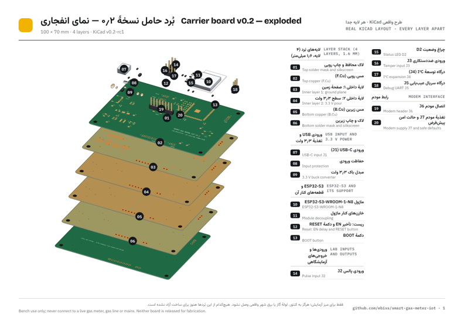
Board sheets
Sixteen A4 pages: each board exploded with a numbered legend, every part in both languages, and both schematics.
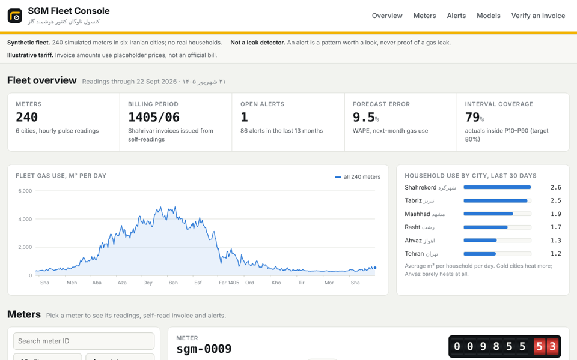
Fleet console
Every meter's readings, its self-read invoice, next-month forecast and alerts.
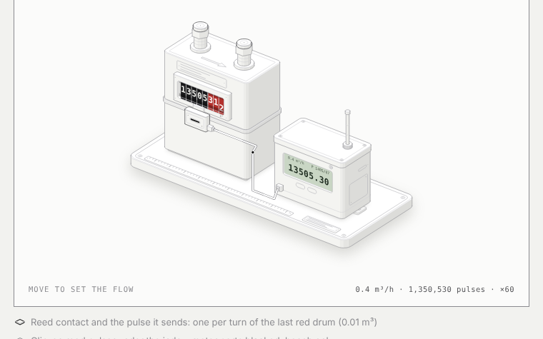
How a pulse works
An interactive drawing: set the gas flow and watch the drums, the reed and the counter.
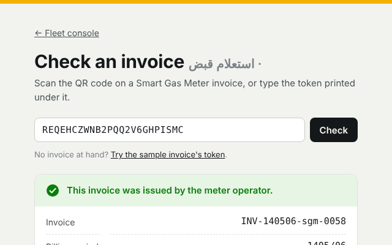
Verify an invoice
Scan an invoice's QR code and see what the issuer actually billed.

The board
Four-layer KiCad 9 PCB, routed and DRC-checked, with Gerbers and a JLCPCB BOM.

Schematic
ESP32-S3 module, protected 5 V input, reed and tamper inputs, modem interface.
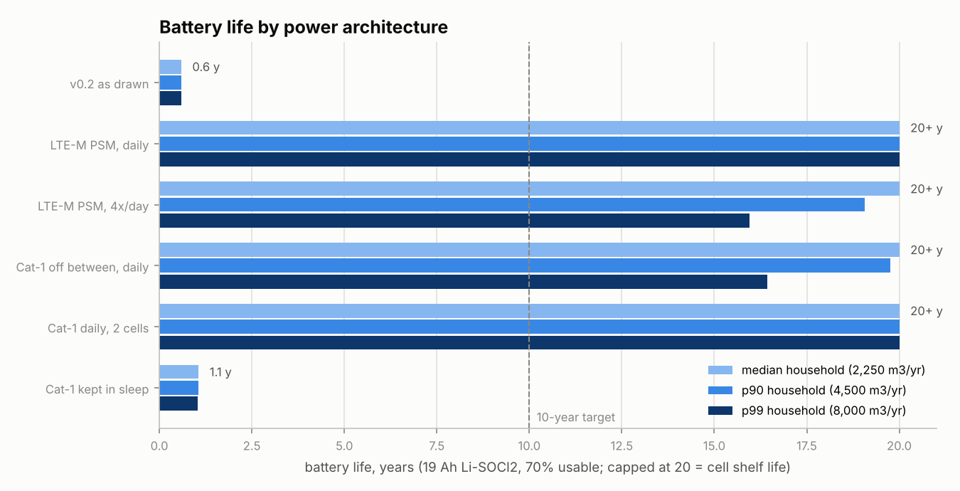
v0.3 decisions
Battery or mains, reed or Hall, LTE-M or Cat-1 in Iran: each costed with a battery-life model.
Measured, not claimed
Scored against the simulator's ground truth on a fleet the models never saw while being tuned.
Bench only
- The pulse input takes a synthetic 3.3 V signal. Never connect a live gas meter, gas line, valve, mains or field wiring.
- An analytics alert is a reason to look, never proof of a gas leak.
- The tariff uses placeholder prices. No invoice here is an official bill.